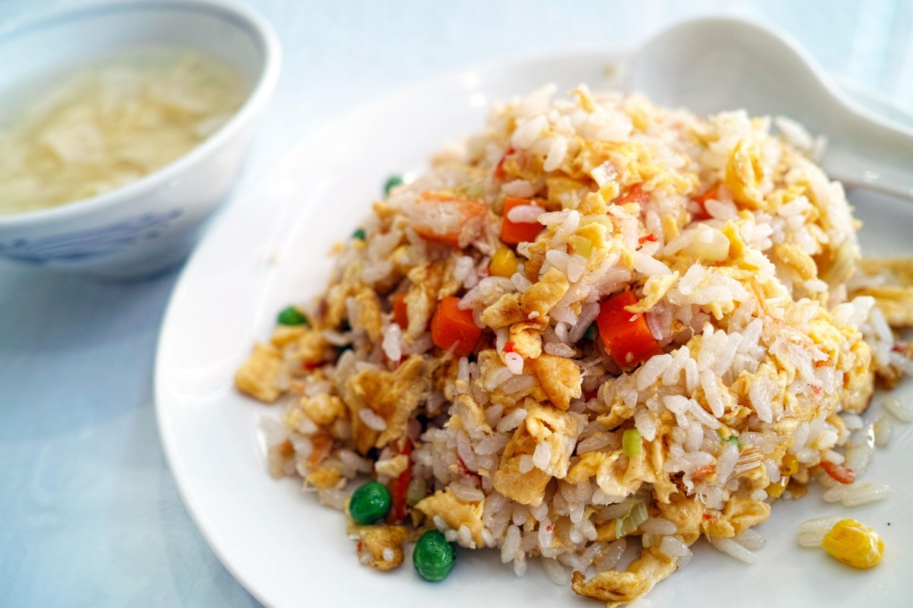

Fried Rice

Description
Fried rice is a simple chinese dish to use up leftovers.
Ingredients
- Rice (preferably overnight)
- Egg
- Frozen mixed vegetables
- Charsiu
- Soy sauce
- Salt
- Pepper
- Oil
Steps
- Heat up pan/wok.
- Put oil. Once oil is shimmering, put in egg and stir vigorously.
- Put rice in, smash the rice to break it up and also to break up the egg into small pieces.
- Put frozen veggies.
- Season to taste.
- Enjoy!
Back to Homepage